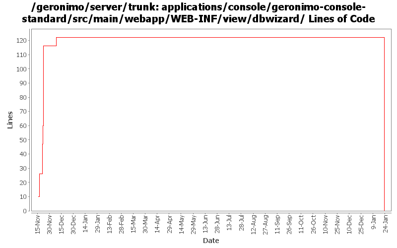

[root]/applications/console/geronimo-console-standard/src/main/webapp/WEB-INF/view/dbwizard

| Author | Changes | Lines of Code | Lines per Change |
|---|---|---|---|
| Totals | 49 (100.0%) | 148 (100.0%) | 3.0 |
| vamsic007 | 7 (14.3%) | 110 (74.3%) | 15.7 |
| kevan | 23 (46.9%) | 17 (11.5%) | 0.7 |
| jaydm | 3 (6.1%) | 12 (8.1%) | 4.0 |
| dain | 1 (2.0%) | 8 (5.4%) | 8.0 |
| dwoods | 1 (2.0%) | 1 (0.7%) | 1.0 |
| jdillon | 12 (24.5%) | 0 (0.0%) | 0.0 |
| jbohn | 2 (4.1%) | 0 (0.0%) | 0.0 |
(GERONIMO-3747) Moved applications/* to plugins/*
0 lines of code changed in 12 files:
Cleaning up formatting and removing tabs
6 lines of code changed in 2 files:
Geronimo-3258 - Added delete option to database pool screen in console
6 lines of code changed in 1 file:
GERONIMO-2375 Console has invalid XHTML in the db pool
1 lines of code changed in 1 file:
Applied GERONIMO-2377 deploying a new datasource with the same name does not indicate any problem in the console
8 lines of code changed in 1 file:
JavaScript validation of "select" element is causing trouble in Internet Explorer unless value attribute is specified in option tag.
4 lines of code changed in 3 files:
GERONIMO-2533 Password setup forms should use a confirmation field
o Takes care of password fields in edit Database Pools
o Field validation using JavaScript for mandatory fields
55 lines of code changed in 1 file:
GERONIMO-2591 Database Pools portlet: Create new pool dependency jar selection problems
14 lines of code changed in 1 file:
JavaScript validation of input fields.
15 lines of code changed in 1 file:
GERONIMO-2533 Password setup forms should use a confirmation field
22 lines of code changed in 1 file:
GERONIMO-2537 Integrating yet another patch supplied by Jay McHugh. Thanks Jaysvn status! Adds apache license header to files in applications/
17 lines of code changed in 23 files:
GERONIMO-1396 Provide consistent look and feel for table views in the web console across all portlets
0 lines of code changed in 2 files: